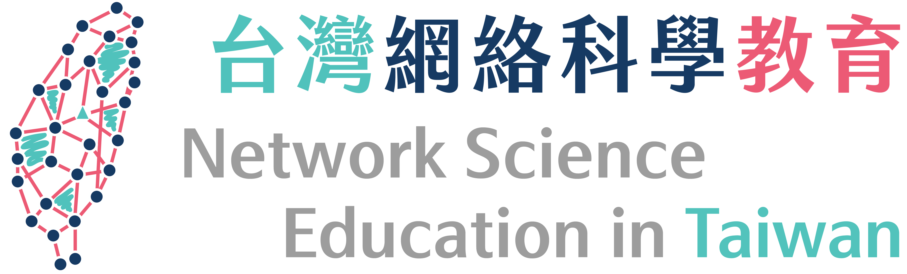

<nz-layout class="layout">
  <nz-header>
    <div class="logo">
      <a routerLink="/" (click)="logoClick();"></a>
    </div>
    <ul nz-menu [nzMode]="'horizontal'" style="border-bottom: 0">
      <li nz-menu-item routerLink="/networks">
        <i nz-icon nzType="share-alt" nzTheme="outline"></i>
        生活中的網絡
      </li>
      <li nz-menu-item routerLink="/tools">
        <i nz-icon nzType="laptop" nzTheme="outline"></i>
        電腦工具
      </li>
      <li nz-menu-item routerLink="/refs">
        <i nz-icon nzType="read" nzTheme="outline"></i>
        參考資料
      </li>
      <li nz-menu-item routerLink="/booklet">
        <i nz-icon nzType="book" nzTheme="outline"></i>
        網絡素養小冊
      </li>
    </ul>
  </nz-header>
    <div [style.min-height.px]="screenHeight">
      <router-outlet></router-outlet>
    </div>
<!--  <div style="height: 80px; background: #fff;"></div>-->
  <nz-footer style="text-align: center; position: inherit; bottom: 0; width: 100%;">
    Copyright © 2016 – 2020 台灣網絡科學教育 |
    <a href="mailto:hi@netscied.tw" style="color: rgba(0,0,0,.85);">聯絡我們</a> |
    <a href="https://github.com/junipertcy/netscied-web" target="_blank" style="color: rgba(0,0,0,.65);">
      <i nz-icon nzType="github" nzTheme="outline"></i>
    </a>
    |
    Powered by <a
    href="https://angular.io/" target="_blank" style="color: rgba(0,0,0,.85);">Angular</a> and <a
    href="https://ng.ant.design/" target="_blank" style="color: rgba(0,0,0,.85);">NG-ZORRO</a>.
  </nz-footer>
</nz-layout>
